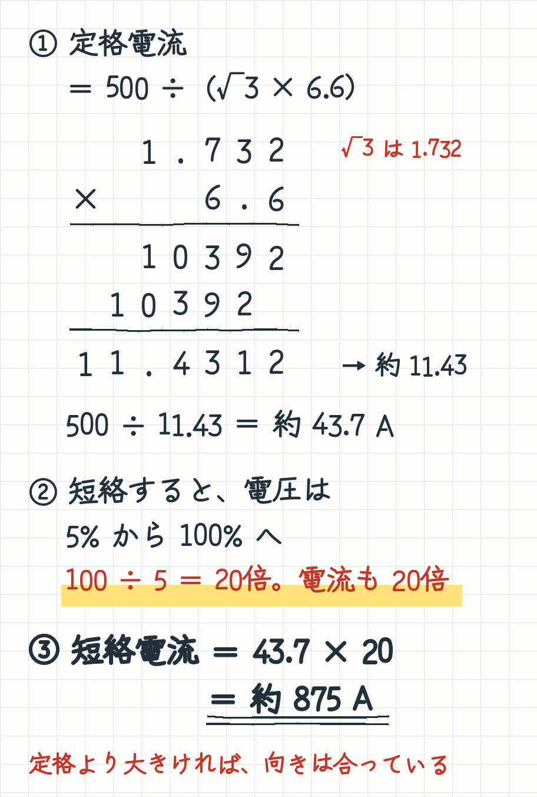

短絡電流の求め方：%Z の 100 は、掛けるのか割るのか
三相と変圧器の全体像 9章のうち、このページは ⑦ %Z と短絡電流
短絡電流を %Z（パーセントインピーダンス）から求める式で、100 と %Z のどちらが分子かを取り違えると、答えが大きくずれます。式を覚え直す代わりに、%Z の意味から出します。
先に答え短絡電流 ＝ 定格電流 × 100 ÷ %Z。100 は掛けて、%Z で割ります。定格電流が 100 A、%Z が 5% なら、100 × 100 ÷ 5 ＝ 2000 A です。
どこで止まるか
止まる段立式%Z が「定格電流を流すのに必要な電圧の割合」だという意味が、式の前に書かれていないことが多くあります。
定格電流に %Z を掛けて 100 で割ってしまう。たとえば定格電流 43.7 A、%Z ＝ 5% で、43.7 × 5 ÷ 100 ＝ 2.2 A。短絡したのに、電流が定格より小さくなっています。
%Z の意味から出す
%Z は、「定格電流が流れたとき、インピーダンスにかかる電圧が、定格電圧の何%か」を表す値です。%Z ＝ 5% なら、定格電流を流すのに要る電圧は、定格電圧の 5% です。
短絡すると、インピーダンスに定格電圧の 100% がそのままかかります。電圧が 5% から 100% へ、20倍になります。インピーダンスは同じなので、電流も20倍になります。
短絡電流 ＝ 定格電流 ×（100 ÷ %Z）
短絡電流は、定格電流より大きくなる向きにしか動きません。100 ÷ %Z が1より大きいことを確かめれば、取り違えに気付けます。
数値で確かめる
三相、定格容量 500 kV·A、定格電圧 6.6 kV、%Z ＝ 5% の変圧器で、定格電圧 6.6 kV の側の短絡電流を求めます。
定格電流 ＝ 500 ÷（√3 × 6.6）≒ 43.7 A
短絡電流 ＝ 43.7 ×（100 ÷ 5）≒ 875 A
短絡電流 ＝ 43.7 ×（100 ÷ 5）≒ 875 A

短絡電流と %Z の式のまとめ
短絡電流 ＝ 定格電流 × 100 ÷ %Z
定格電流（三相）＝ 定格容量 ÷（√3 × 定格電圧）
短絡容量 ＝ 定格容量 × 100 ÷ %Z
定格電流（三相）＝ 定格容量 ÷（√3 × 定格電圧）
短絡容量 ＝ 定格容量 × 100 ÷ %Z
定格容量 500 kV·A、%Z ＝ 5% なら、短絡容量は 500 × 100 ÷ 5 ＝ 10000 kV·A（10 MV·A）です。
別の呼び方：%Z は、パーセントインピーダンス、百分率インピーダンス、%インピーダンスとも書かれます。ここで求めた値は、三相短絡電流と呼ばれます。
確かめの1問
定格電流 100 A、%Z ＝ 4% の変圧器の短絡電流は何 A ですか。
定格電流 100 A、%Z ＝ 4% の変圧器の短絡電流は何 A ですか。
答え
100 ×（100 ÷ 4）＝ 2500 A。電圧が 4% から 100% へ、25倍になるからです。この計算を順を追って解く本：第2巻の案内
最終更新：2026年11月17日